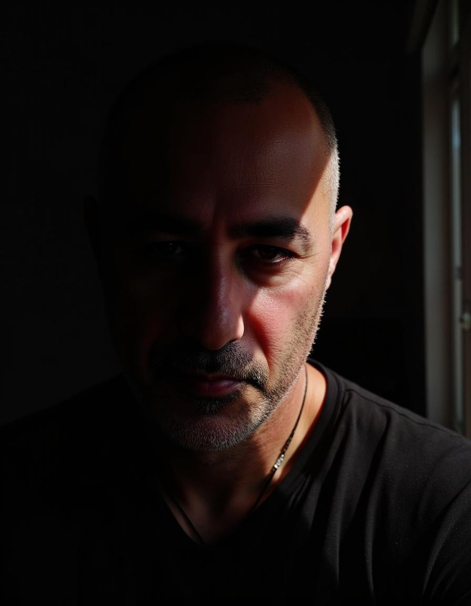
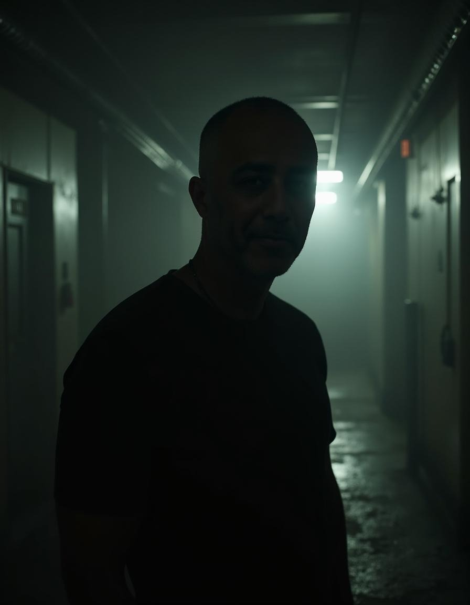
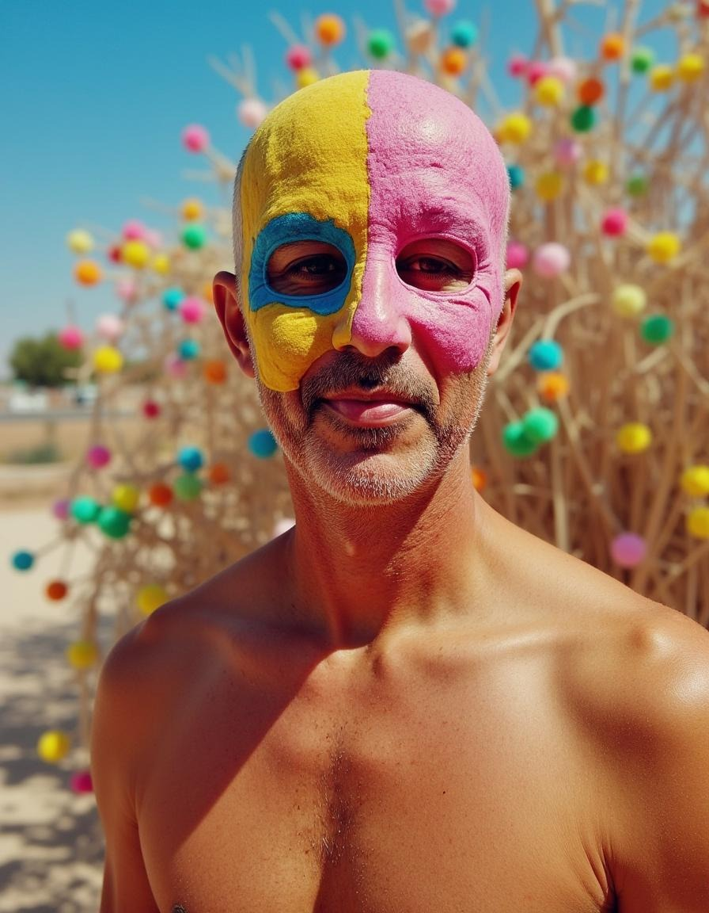
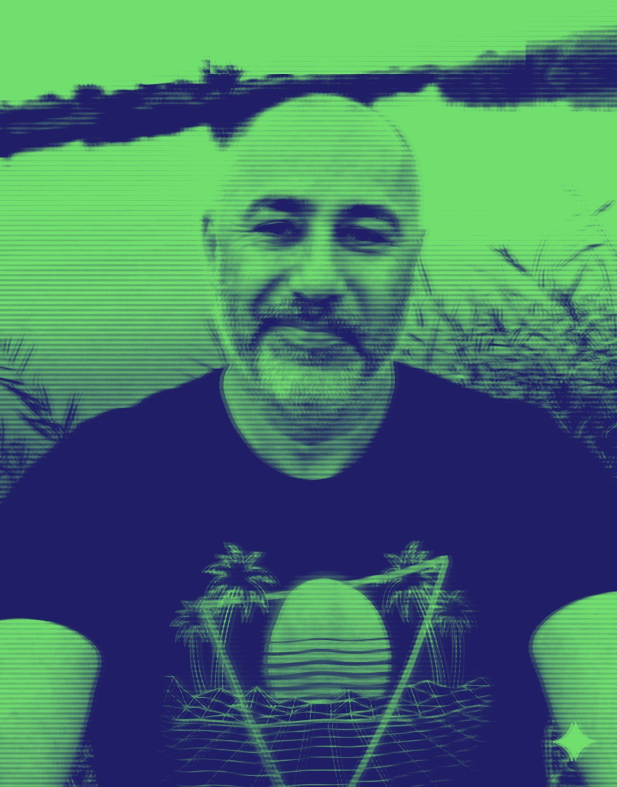

A Bit About Me
Ever since I can remember, I've lived and breathed retro. The first computer that truly captured my heart was the Commodore 64, and from that moment something inside me has stayed lit to this day. The blue screen, the SID sounds, the long loads from tape or disk, the big pixels that aren't ashamed to be pixels — all of these turned from a technological joke into art for me. Over the years, I didn't just remember the experience; I actually returned to it: I build games, demos and new scenes on the Commodore 64 that try to take the technical limitations and turn them into a creative advantage.
I'm also a musician, and create as part of the ensemble Kleiner'82, a musical project that connects synthwave, SID sounds and neon colors of the eighties. The goal is simple: take that feeling of a late night in front of a CRT screen, with music that sounds like a soundtrack to a game that was never released, and turn it into real songs you can listen to today. Whether it's an album of covers of tunes I loved on the Commodore 64 or original pieces, I always try to maintain the balance between nostalgia and living, breathing creation.
The world of 8-bit always felt like an infinite playground to me. The simplicity and limitation of the hardware — a small number of colors, limited memory, a slow processor — demand a different kind of creativity. This is true in graphics, music, programming and gameplay. From there I also rolled into the 16-bit world: Amiga, consoles like the Sega Genesis, the demoscene, with smoother transitions, richer animations and a wider color palette. I love seeing how these worlds connect — on one hand the Commodore 64, exposed and raw, on the other hand the Amiga that offers almost a complete "creation studio," and still everything remains retro, sharp, colorful and very personal.
Beyond personal creation, the community side is very important to me. I manage the Facebook group "8-bit Israel," an Israeli community of Commodore, Amiga, old console enthusiasts and everyone who loves pixels and text mode. This is a group where people share projects, ask questions, bring up memories, talk about new hardware for retro, get excited about mods, restore old equipment and bring a smile to each other's faces. For me it's not just a group, but a kind of digital home for anyone who feels their heart beats a little at 50 Hz.
From this community was also born the monthly newsletter I publish, "8-bit Israel," a concentrated summary of retro news, interesting projects, new games for Commodore and Amiga, modern hardware for the old world, recommendations for music in the synthwave and chiptune styles, links to YouTube videos, new demos and anything that feels connected to this world. The newsletter is, for me, a way to capture a moment, stop the noise of daily life and say: "Let's go back for a moment to a world where a single disk could fill our whole evening."



Who I Am in the Retro World
I love exploring the limits of old systems and trying to squeeze out a little more color, a little more sound and a little more magic. Whether it's assembly code on the Commodore 64, games on the Amiga 500, or producing modern synthwave tracks, it all connects to the same basic love: old computers, arcades, and music that feels like a nighttime drive through a neon city.
I enjoy following news from the C64 and Amiga scenes, hunting for new indie projects, and sharing recommendations and discoveries with friends and online communities.
Arcade / 16-bit Gallery
A few arcade and synthwave style photos that capture the vibe of 8bitretro.tech — pixels, bold colors, neon and nostalgia.



8-bit Israel – Community & Newsletter
Beyond personal creation, I manage the "8-bit Israel" community on Facebook and publish a monthly newsletter with news, projects and content from the retro world.
Facebook Group – 8-bit Israel
A lively Israeli community for Commodore 64 enthusiasts, Amiga fans, retro console lovers, pixel art fans, demoscene followers, vintage hardware collectors and everything that smells of digital nostalgia.
Join the Group8-bit Israel Newsletter
A monthly newsletter with retro news, interesting projects, recommendations, links, demos, music and a summary of everything new in the 8-bit and 16-bit world.
Subscribe to Newsletter